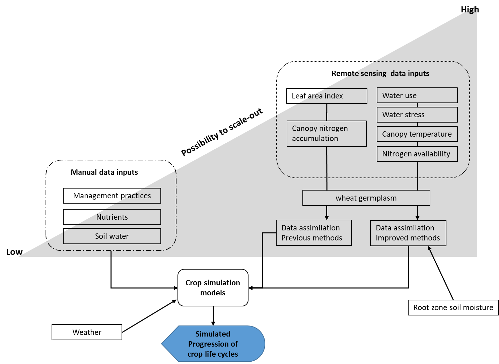
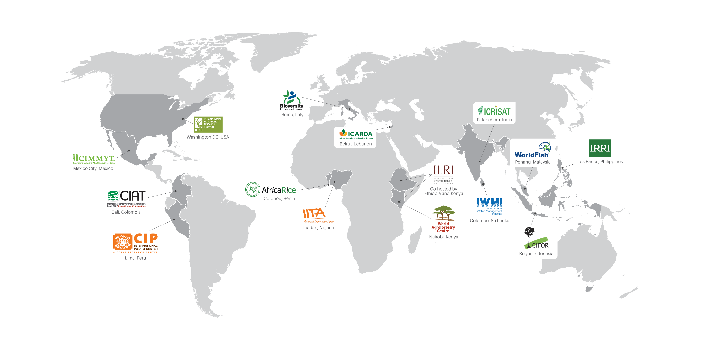
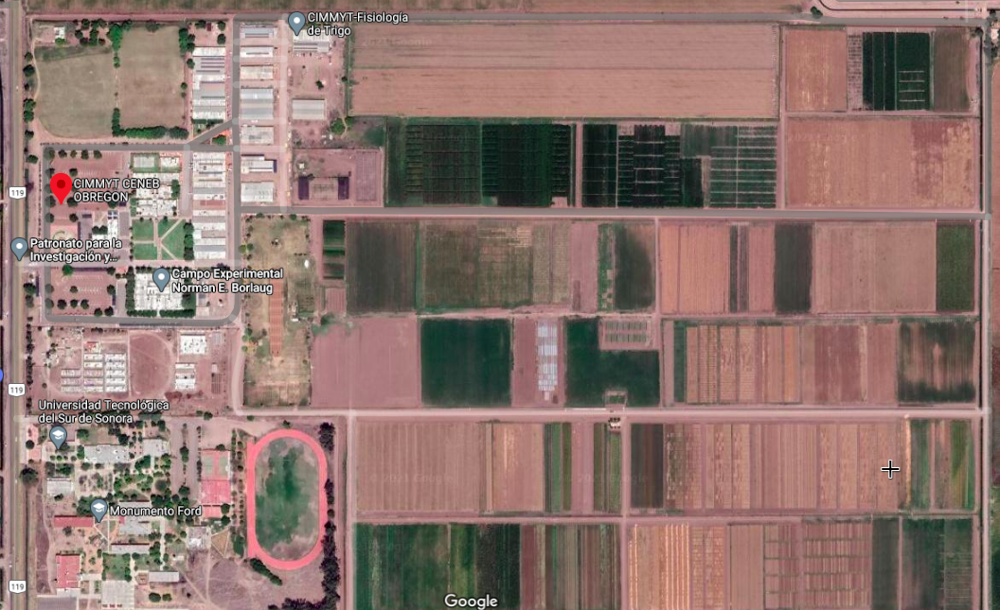

Testing remote-sensed data in crop simulations with the view to increase general availability and accessibility of inputs to crop models and boost scale-out
Luis Vargas RojasApril 08, 2021
Advisors
Dr. Davide Cammarano, Purdue University
Dr. Diane R. Wang, Purdue University
Dr. Matthew Reynolds, , Global Wheat Program, CIMMYT
Introduction

Objectives
Understanding how best to apply remote sensing techniques for crop modeling to enable the systematic parameterization of large collections of genotypes.
-
Determine the minimum dataset of vegetation indices required for accurate simulations.
-
Improve crop model formalisms for water transport and energy balance.
-
Apply RS on larger breeding populations to scale out model parameterization and testing.
The experiment
Consultative Group on International Agriculture Research
{kind=link}

The experiment
Population of contrasting genotypes grown in plots under three different environments: optimal, water stressed and heat stressed conditions.
-
Autumn-Winter 2021-2022
-
Autumn-Winter 2022-2023
Data to collect
Weather Daily Minimum and maximum temperature
-
Daily total precipitation
-
Dewpoint temperature or relative humidity
-
Total solar radiation or sunshine hours
-
Average daily wind speed or daily wind run
-
Soil taxonomy
-
Bulk density
Initial soil profiles conditions
-
Initial soil moisture
-
Initial nutrients (NO3)
-
Multispectral images
-
NDVI
-
Canopy temperature
-
Leaf area index
-
SPAD
Project progress
-
Crop Modeling